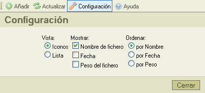

El botón "Configuración", en la barra de herramientas, abre el "Panel de Configuración", donde usted podrá configurar y personalizar CKFinder, he aquí una imagen de él:

Todos los ajustes son guardados automaticamente utilizando las denominadas "Cookies" de su navegador. Las "Cookies" son pequeños ficheros que contienen información de configuración privada para sitios web especificos.
Para cerrar el panel de configuración, haga click sobre el botón "Cerrar" o haga click nuevamente sobre el botón "Configuración" de la barra de herramientas.
Todas las opciones de configuración tienen que ver con el Panel de Ficheros . Se usan para controlar como mostrar información en ese panel. El panel de Ficheros reacciona inmediatamente a los cambios hechos en el panel de configuración.
Controla el modo actual de vista del Panel de Ficheros:
Ajusta la cantidad de información disponible en el panel de ficheros. Para ejemplificar, he aquí como se mostrarían los ficheros cuando ningúna opción está seleccionada, hasta llegar a tener todas las opciones seleccionadas.
|
|
|
|
|
Controla el orden en el que los ficheros serán listados. Puede ser alfabeticamente por el nombre del fichero, por fecha de creación del fichero siendo el más nuevo el primero o incluso por el tamaño del fichero.